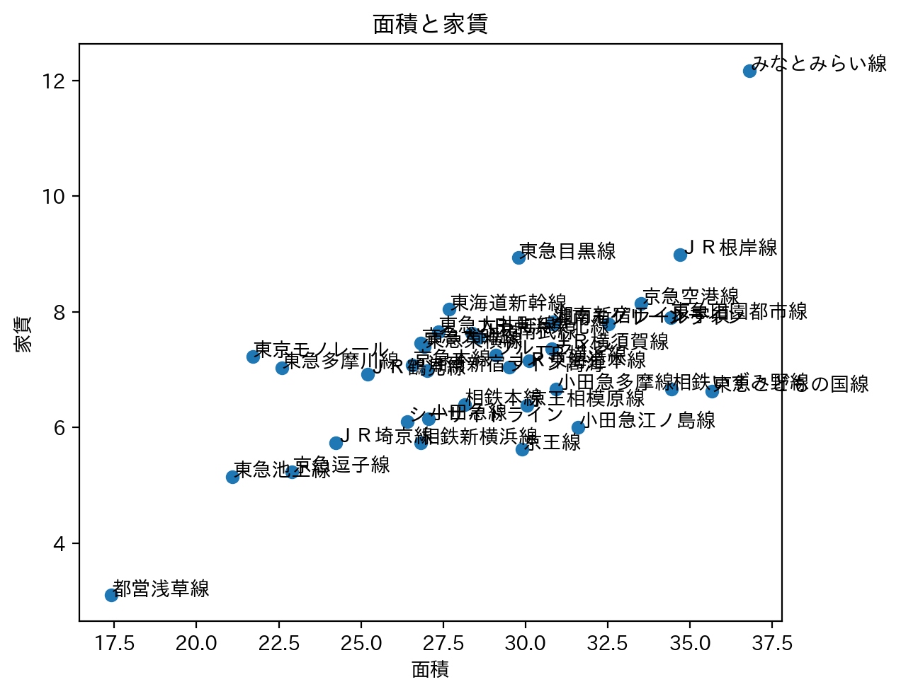

スーモ物件調べ
広くて安いのをメインに調べてみたところ
東急こどもの国線や小田急らへんがいい物件であると思った。その二つの路線の特徴としては都市部から少し離れているというところだ。都市部から離れているがゆえに都市部までアクセスするのに時間が少しいるということだ。

このグラフからは、都営浅草線とみなとみらい線は私たち学生にとっては家賃が高い、面積が小さいため、いい物件とは言えない。
次に築年数と家賃について
これは都営浅草線とみなとみらい線以外は中央に集中しているためこのグラフと前のグラフを比較し、東急こどもの国線、小田急が相対的にいいのではないかと思う。
路線別の平均築年数について
このグラフもほとんど20年以上30年未満に集中している。東京モノレールは築年数は立っていないものの、都心からのアクセスのため、大変である。

結論
僕が着眼点として置いた広くて安い物件は東急こどもの国線か、小田急線がいいと思った。特に、小田急は横浜駅までのアクセスもいいので、小田急線周辺の駅を探すのがいいと思った。